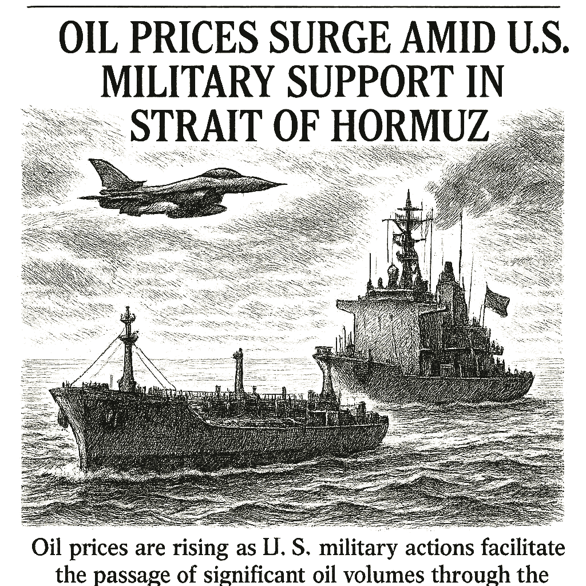

SPY
Current: $764.86Change: -11.48 (-1.48%)
Updated:
Source: yahoo_chartFreshness: fresh


Oil prices are rising as U.S. military actions facilitate the passage of significant oil volumes through the Strait of Hormuz, impacting global markets.

Today's Headline: Oil Prices Surge Amid U.S. Military Support in Strait of Hormuz
Setup: Oil prices are rising as U.S. military actions facilitate the passage of significant oil volumes through the Strait of Hormuz, impacting global markets.
Primary Topic: Oil Prices
Specific Development: The U.S. military has aided the passage of 660 million barrels of oil through the Strait of Hormuz since May, contributing to rising oil prices.
Why Today Is Different: This development marks a significant geopolitical influence on oil supply, coinciding with a broader market reaction to ongoing tensions in the region.
Secondary Topics: Geopolitical Tensions; Market Reactions
Tone: Neutral
Sectors: Energy; Commodities
Commodities: Oil; Brent; WTI
Countries Or Regions: United States; Iran
Macro Themes: Geopolitical Risk; Energy Supply
Why This Story: The military's involvement in oil passage is likely to affect pricing and supply dynamics in the oil market, influencing investor sentiment.
Why This Matters: MEXC Reports 142% Volume Surge for MU Futures Following Record Micron Earnings Beat is the clearest current evidence-led frame for Joshua's observation-only review; missing facts remain explicit intelligence gaps.

Summary: Global markets are reacting to rising oil prices, with significant movements in energy stocks and commodities.
What Happened Overnight: Oil prices rose sharply, with Brent up 3.03% and WTI up 2.24%.
What Changed Materially: The U.S. military's involvement in oil passage has created a new dynamic in the oil market.
Which Assets Sectors Are Affected: Energy; Commodities
Does It Look Like Noise Or A Real Regime Input: This appears to be a significant regime input rather than mere market noise.
Why This Matters: The rise in oil prices can influence inflation and economic growth, affecting investor strategies across sectors.


- WOPR learning pipeline: Collecting samples
- Candidates evaluated 24h: 0
- Current gate: Evidence
- Notification ledger events in 24h: 11
- Pending orders created/canceled/filled/expired: 4/0/1/0
- Pending lifecycle interpretation: Pending-order cancellations have trackable reasons and no obvious rapid churn pattern.
- Portfolio risk: Label: Moderate / Score: 41.4
- Latest intelligence gap report: intelligence_gap_report_2026-08-16.pdf
Why This Matters: The active gate is Evidence, so the key question is why candidates are stopping before approval, not how to force trades.

- Sentinel role: infrastructure and operational status only.
- State: ONLINE
- Last successful validation: 2026-08-21T14:16:07.435960+00:00
- Payloads accepted/rejected: 13092/0
- Node health score: 100
Why This Matters: Sentinel is ONLINE, so Joshua should use its context only to the extent the latest accepted pulse is fresh and authenticated.

CANDIDATES MOVING THROUGH JOSHUA'S INVESTMENT-REVIEW WORKFLOW
FROZEN DAILY BRIEF SNAPSHOT | 2026-08-21T14:11:29.272060+00:00
QUEUE SUMMARY | Investment Ready: 0 | Waiting for Price: 0 | Waiting for Evidence: 2 | Research Underway: 1 | Governance Hold: 2 | Monitor Only: 0
Investment-ready status: No candidates are currently Investment Ready.
#8 DIA - Research Underway [Moved Up 12->8]
Joshua's Thesis: Positive thesis not yet established.
Why Waiting: Research evidence is still being gathered.
Price: Current price unavailable.; Preferred entry not established.
What Unlocks It: Clear valuation support; Evidence that the business quality matches the risk being taken; Independent evidence streams pointing the same way
Portfolio Fit: 70.20 ↑
Risk: 21.80 ↓
Next: Columbo - Clear valuation support; Evidence that the business quality matches the risk being taken; Independent evidence streams pointing the same way
#9 QBTS - Waiting for Evidence [NEW]
Joshua's Thesis: Positive thesis not yet established.
Why Waiting: Required evidence is incomplete.
Price: 19.82 now; Preferred entry not established.
What Unlocks It: Clear valuation support; Evidence that the business quality matches the risk being taken; Independent evidence streams pointing the same way
Portfolio Fit: 0.00
Risk: 89.80
Next: Joshua - Clear valuation support; Evidence that the business quality matches the risk being taken; Independent evidence streams pointing the same way
#11 PLTR - Governance Hold [Moved Down 10->11]
Joshua's Thesis: Positive thesis not yet established.
Why Waiting: Governance gate has not cleared.
Price: 173.70 now; 126.93 preferred entry
What Unlocks It: Governance gate clears; Clear valuation support; Evidence that the business quality matches the risk being taken
Portfolio Fit: 35.70 ↑
Risk: 46.30 ↓
Next: Columbo - Re-evaluate after the recorded gate clears.
#23 IONQ - Waiting for Evidence [Moved Down 22->23]
Joshua's Thesis: Positive thesis not yet established.
Why Waiting: Positioning gate failed.
Price: 43.44 now; 43.08 preferred entry
What Unlocks It: Clear valuation support; Evidence that the business quality matches the risk being taken; Independent evidence streams pointing the same way
Portfolio Fit: 0.00
Risk: 89.80 ↓
Next: Joshua - Positioning status must no longer be warning
#25 RCL - Governance Hold [NEW]
Joshua's Thesis: Positive thesis not yet established.
Why Waiting: Governance gate has not cleared.
Price: 290.41 now; 288.20 preferred entry
What Unlocks It: Governance gate clears; Clear valuation support; Evidence that the business quality matches the risk being taken
Portfolio Fit: 0.00
Risk: 89.80
Next: Columbo - Re-evaluate after the recorded gate clears.
Observation only. This section creates no recommendation, order, authority, or execution instruction.

- How should Joshua adjust its portfolio in response to rising oil prices?
- What are the implications of U.S. military actions for long-term oil supply?
- How might geopolitical tensions influence other sectors beyond energy?
- What indicators should Joshua monitor to assess ongoing market volatility?
- Is there a need for a strategic shift in investment focus given current market conditions?

The rising oil prices driven by geopolitical factors highlight the interconnectedness of global markets. The military's role in facilitating oil passage is a significant development that could lead to increased volatility and necessitate adjustments in investment strategies.

Oil prices have surged due to U.S. military actions facilitating oil passage, marking a shift in market dynamics.

The significant rise in oil prices due to geopolitical factors necessitates a reevaluation of market strategies.
No new warnings; however, the geopolitical situation remains fluid and requires close monitoring.
Portfolio Construction Review
Current allocation: 149.67 allocated.
Largest sector: Technology at 33.3%.
Largest theme: AI infrastructure at 33.3%.
Diversification: Mixed (66.7).
Cash allocation: 85.0% unallocated.
Recommended exposure: MARA at portfolio-fit score 61.1.
Portfolio fit: MARA has a mixed portfolio fit; the diversification improvement is not decisive yet.
Why This Matters: Portfolio Manager evaluates whether an opportunity improves this portfolio; it does not select the investment, vote, or authorize execution.

Evaluate how geopolitical developments could reshape market opportunities and risks today.

| Can trigger trade | no |
| Can modify trade rules | no |
| Can add watch items | yes |
| Can add review questions | yes |
| Can adjust confidence notes | yes |
| Input policy | external_intelligence_plus_sanitized_internal_observations |
| External policy | The Editor-in-Chief synthesizes current world/market context where available and labels unknowns; provider/model provenance remains separate. |
| Internal policy | Joshua/WOPR/Sentinel facts are supplied as sanitized observation-only summaries. |
| Editorial model | gpt-4o-mini |
- Selected by a deterministic daily rotation through symbols already present in the persisted Chronicle snapshot.
- Related event on the canonical wire: Palantir: Huge Earnings Complete My Correction Call (Rating Upgrade)
- Oil prices steady as investors assess US-Iran war outlook - Reuters
- Desk: commodity; source: Reuters; linked symbols: none recorded.
- Published: 8/19/26 18:11 MST.
- High-impact watch: GDP (Second Estimate) and Corporate Profits, 2nd Quarter 2026 - 8/26/26 05:30 MST.
- Affected assets: US equities, Treasuries, USD; source: bea_release_schedule.
- NVDA earnings: August 26, 2026, after close.
- AVGO earnings: September 2, 2026, after close.
- DELL earnings: September 3, 2026, time unknown.
- Health Care: 4.35% session performance; source: persisted sector ledger.
- Energy: 3.38% session performance; source: persisted sector ledger.
- Materials: 1.87% session performance; source: persisted sector ledger.
- BTCUSD: 19.11% recorded move; price: 76831.96.
- Session: 24h; catalyst status: no_verified_catalyst; source: yahoo_chart.
- Geopolitical Developments; why it matters: Ongoing tensions can affect market stability and investor sentiment.
- State: weakening; score: 43.00/100; advance/decline ratio: 0.55.
- Above 50-day average: 62.20%; sample: 119; provider: sentinel_sampled_breadth.
- Decision outcomes evaluated: 16; currently untestable: 0.
- Warning review: still watching 2, unconfirmed 1; confidence calibration: insufficient_sample.
- Current macro regime: defensive_rotation; change probability: unavailable.
- Risk dashboard: cautious (62/100); breadth: weakening; sentiment: neutral.
- Scenario board only - a current-state observation, not a forecast or execution instruction.

- Hosts Making Money with Charles Payne and founded Wall Street Strategies to provide market research for individual investors.
- Published quotation: "The stock market is the greatest wealth-creation machine in history."
- Published framework: Look for leadership, improving fundamentals, innovation, and market participation while encouraging individuals to build knowledge, accept responsibility, and engage with long-term wealth creation.
- Committee lens: Payne contributes a growth-leadership and individual-opportunity lens, asking whether improving fundamentals and market recognition support the upside case.
- Public philosophy profile only; no participation, endorsement, or current recommendation is implied.
- Is there a need for a strategic shift in investment focus given current market conditions?
- MARA: Current symbol-specific prediction confidence is unavailable.
- MARA: No canonical symbol-specific material event is linked.
- Attach the missing MARA evidence before the next committee review.
- How should Joshua adjust its portfolio in response to rising oil prices?
- What are the implications of U.S. military actions for long-term oil supply?
- How might geopolitical tensions influence other sectors beyond energy?
- What indicators should Joshua monitor to assess ongoing market volatility?
- Evidence agenda: MARA - Current symbol-specific prediction confidence is unavailable.
- Proposed review: Oil Price Movements; why it matters: Rising oil prices can impact inflation and economic growth.
- Proposed review: Market Sentiment Indicators; why it matters: Understanding sentiment can guide investment decisions.
- Canonical instruments reviewed: 24; delayed 6, fresh 18.
- Leading sources: yahoo_chart (21), treasury_official_yield_curve (3).
- Snapshot recorded: 8/21/26 07:15 MST.
Oil Prices Surge Amid U.S. Military Support in Strait of Hormuz
Storm meter: Balanced
#8 DIA - Research Underway [Moved Up 12->8]
Observation mode: observation_only
Watch: Oil Price Movements; why it matters: Rising oil prices can impact inflation and economic growth.
Question: How should Joshua adjust its portfolio in response to rising oil prices?